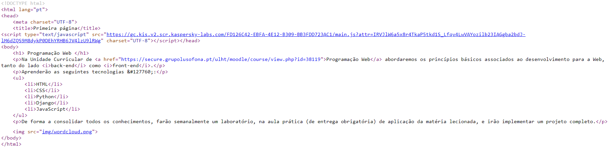
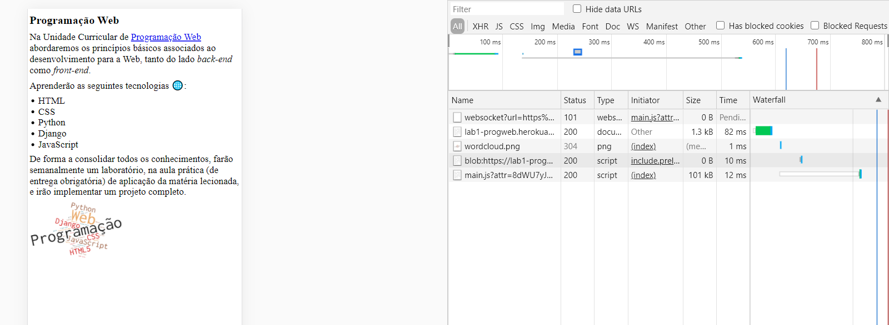

Trabalho realizado por: Muhammad Imran Iquibal, 21805522
Neste relatório aprendemos a fazer uma página web e ver as suas especificações 🌐:

Através da pesquisa no google do ip pessoal obtive a minha localização. Para obter o IP do heruku, fiz na linha de comandos o ping e consegui obter o IP.
Traceroute do IP do heroku, desde do IP do computador até ao ip do destino
Código HTML
Neste print, podemos ver o código da nossa App.
Nesta parte será para observar os ficheiros descarregados, bem como o header, preview e timing. Podemos também verificar quais os ficheiros descarregados. São 2: lib1-porgweb e o wordcloud. Aparecem mais devido ao antivirus estar ativo.
Neste exemplo, dá para verficar qual o header, timing e a preview do nosso ficheiro, que neste caso é a página principal.
Aqui podemos verificar as especificações relativas à imagem wordcloud.